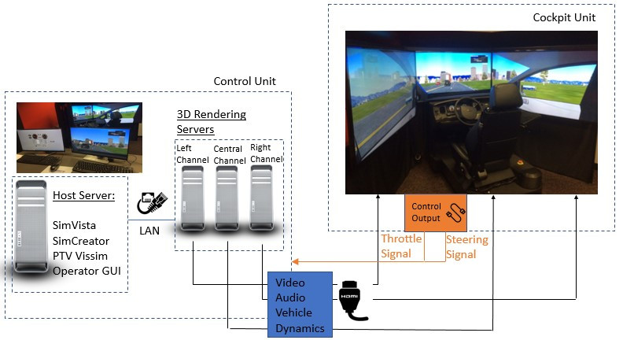
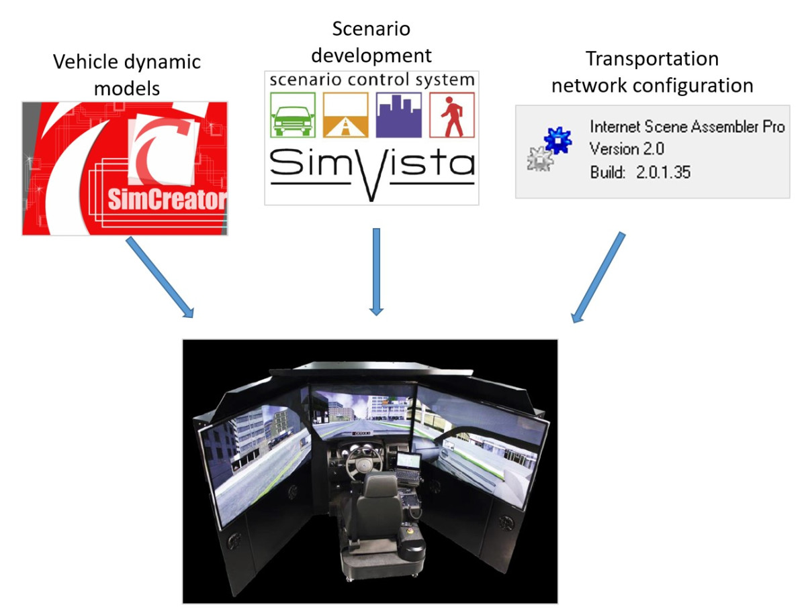

Recently accidents involving Automated Driving System (ADS) have rose the concerns of driver interaction with ADSs (typically referred as human factor, or human machine interface (HMI)) has again and again, based on the NTSB investigate, a vitally important aspect of advanced driver-assistance systems (ADAS)
Capture of the behaviors of drivers, which has proven to be challenging through legacy simulation models (e.g., Vissim, AIMSUN etc.), can be obtained by the use of high-fidelity driving simulator
Driving simulator (DS), typically used for driving education and medical research, has been applied for analyzing drivers’ reactions in response to Intelligent Transportation Systems (ITS) technologies
DS enables test drivers to encounter potentially dangerous or ‘unsafe’ driving conditions, or being testing with experimental ITS applications, without being physically at risk.
Research Objectives
Study the most effective way for an ADS to accurately convey its intentions, along with other information, to a human driver
Research Approach
Use the one-seat driving simulator, powered by Realtime Technologies
SimCreator
SimVista
Internet Scene Assembly
Manged lane implementation strategies
Manged lane implementation strategies
State-of-the-art Driving Simulator Lab at NJIT[gallery ids="148,149" type="rectangular" link="file"]